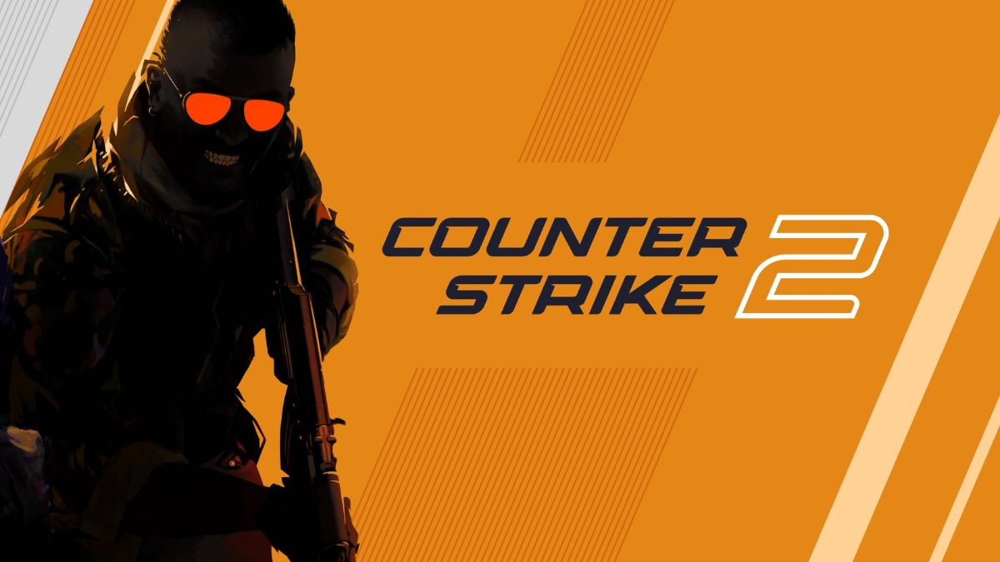
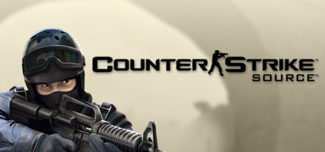
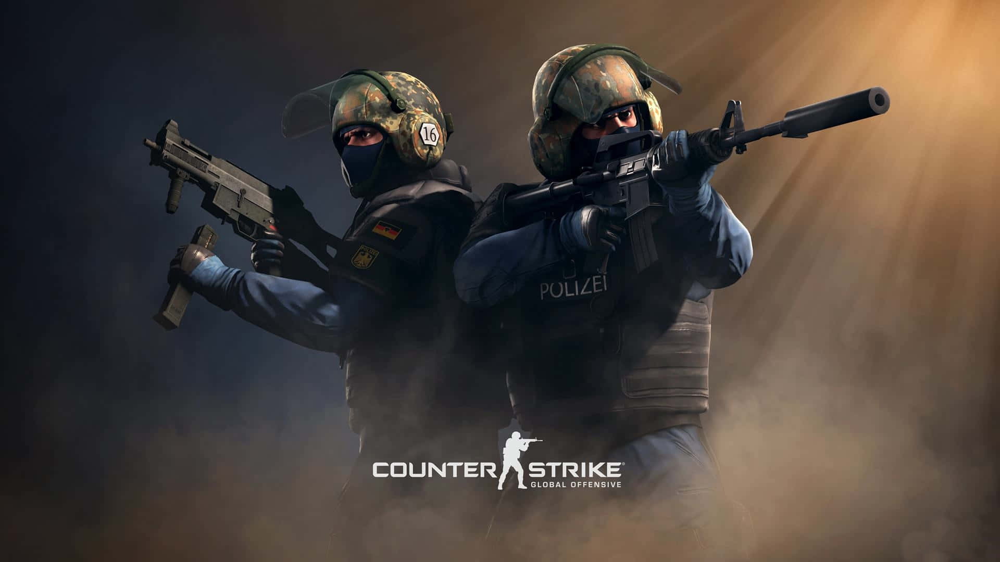

Counter-Strike 1.6

Versiunea clasică, cunoscută pentru serverele comunitare.
Citește istoriaCounter-Strike este un joc de tip shooter în care se înfruntă două echipe: Teroriștii și Counter-Teroriștii. A apărut în 1999 ca modificare pentru Half-Life.
Teroriștii încearcă să planteze o bombă, iar Counter-Teroriștii încearcă s-o oprească sau s-o dezamorseze.

Versiunea clasică, cunoscută pentru serverele comunitare.
Citește istoria
Versiunea din 2004, făcută pe motorul grafic Source.
Citește istoria
CS:GO a adus jocul la o comunitate internațională mare.
Citește istoria
Cea mai nouă versiune, construită pe motorul Source 2.
Citește istoria